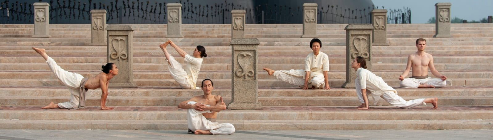
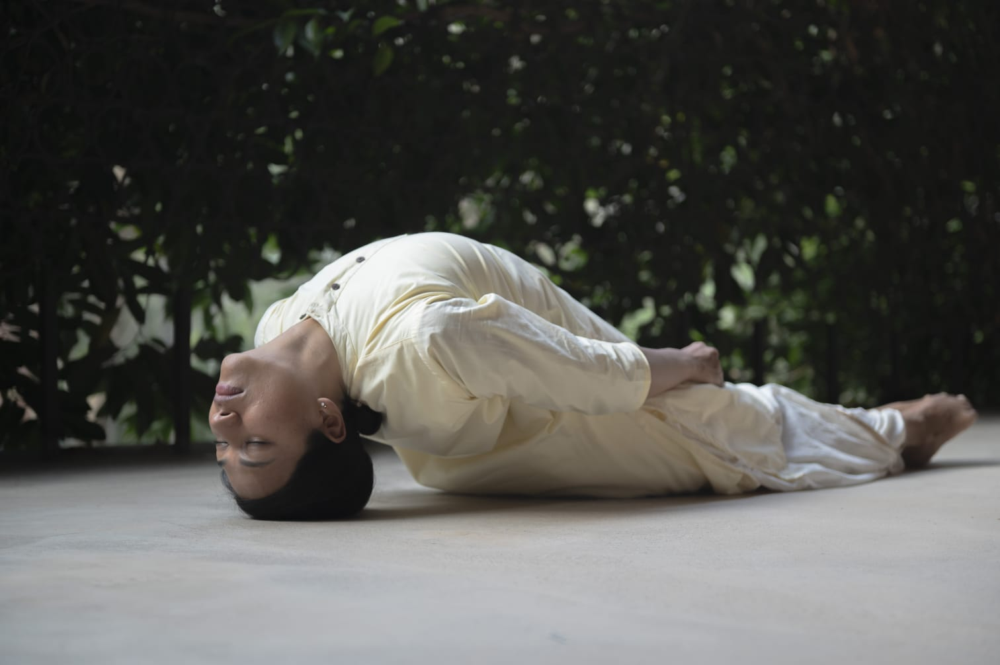

Isha Classical Practice
A subtle “beautifying kriya” that draws awareness inward by closing the six sensory gates, leading to profound inner stillness.
Enroll at Yogartha →What is Shanmukhi Mudra?
Shanmukhi Mudra is a simple yet subtle Hatha Yoga practice offered within the Isha Yoga tradition. The name comes from “shan” (six) and “mukhi” (gates or faces), referring to the six sensory openings of the face: the two eyes, two ears, the nose, and the mouth.
By gently closing these sensory gates using a specific hand gesture (mudra) combined with breath, the practitioner withdraws from external stimuli. This practice is a foundational step towards Pratyahara — the yogic process of sense withdrawal — turning the awareness inward and preparing the system for deeper states of meditation.
Beyond its spiritual dimension, Shanmukhi Mudra is also known as a “beautifying kriya,” uniquely focused on rejuvenating the face, brightening the eyes, and improving the health of the sensory organs.

Benefits
Brightens the eyes and rejuvenates the face, improving the natural aura and glow by releasing accumulated facial tension.
Helps with various ailments related to the eyes, ears, and nose, promoting overall health of the sensory organs.
Specifically documented and highly effective in helping to relieve the symptoms of vertigo and tinnitus.
Creates a state of deep inner stillness, calming the mind and preparing the system for profound meditative experiences.
Promotes mental equilibrium, significantly enhances awareness, and reduces daily stress and anxiety.
Acts as a powerful tool for sense withdrawal, helping you turn your attention from the external world to the internal landscape.
The Practice
Learning the precise hand gesture where fingers gently seal the sensory openings of the face.
Integrating specific breathing techniques with the mudra to enhance the inward flow of energy.
Often combined with AUM chanting or Nadi Shuddhi to prepare the system.
Taught in a single session of approximately 1.5 to 2 hours, making it highly accessible.
Who Can Join
“If you shut off the sensory gates, the mind will naturally look inward. Shanmukhi Mudra is a way of turning the life energy inward.”
— Sadhguru
Join this special workshop at Yogartha, Dehradun and equip yourself with a lifelong tool for inner balance.